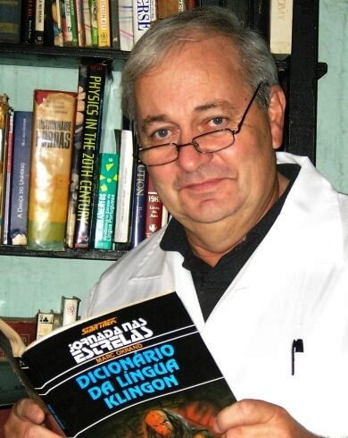

Pierluigi Piazzi
1943 - 2015

"Seu cérebro seu maravilhoso cérebro, é capaz de se tornar cada
vez mais habilidades e conhecimentos. Porém, o processo é lento
e nada no mundo pode acelerá-lo". - Prof.Pier